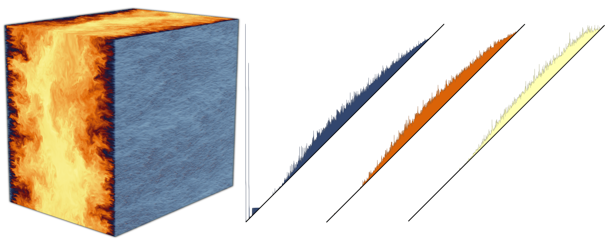

Research Engineer
Computer Science
TUM, Campus Heilbronn
eve dot leguillou at protonmail dot com
I am currently a research engineering, since November 2025, at the Technical University of Munich (TUM) Campus Heilbronn, within the Warm World project.
My PhD thesis focused on topological data analysis at scale, especially the port of such algorithms to the MPI distributed-memory model, under the direction of Julien Tierny and Pierre Fortin. From 2021 to 2025, I was a contributor to the Topology ToolKit (TTK), an open source library for topological data analysis. In particular, my contributions to TTK included the port to MPI of TTK's data structure and of several algorithms.
I received a M.S. degree in 2020 in Computer Science from Cranfield University, in the "Software Engineering for Technical Computing" track, as well as an engineering degree in 2021 from Ecole Centrale de Lille in the "Data Science and Artificial Intelligence" track.
|  |
Distributed Discrete Morse Sandwich: Efficient Computation of Persistence Diagrams for Massive Scalar Data Eve Le Guillou, Pierre Fortin, Julien Tierny IEEE Transactions on Parallel and Distributed Systems, vol. 37, no. 1, pp. 137-154, Jan. 2026, 10.1109/TPDS.2025.3626047 Paper Code |